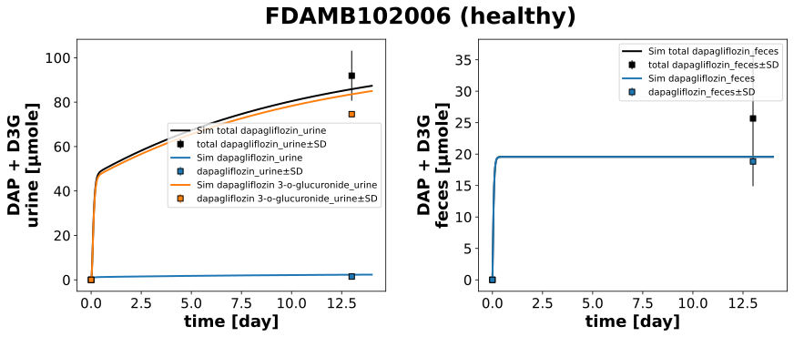

|  |
../../../../experiments/studies/fdamb102006.py
from typing import Dict
from sbmlsim.data import DataSet, load_pkdb_dataframe
from sbmlsim.fit import FitMapping, FitData
from sbmlutils.console import console
from pkdb_models.models.dapagliflozin.experiments.base_experiment import (
DapagliflozinSimulationExperiment,
)
from pkdb_models.models.dapagliflozin.experiments.metadata import Tissue, Route, Dosing, ApplicationForm, Health, \
Fasting, DapagliflozinMappingMetaData
from sbmlsim.plot import Axis, Figure
from sbmlsim.simulation import Timecourse, TimecourseSim
from pkdb_models.models.dapagliflozin.helpers import run_experiments
class FDAMB102006(DapagliflozinSimulationExperiment):
"""Simulation experiment of FDAMB102006."""
colors = {
"Aurine_daptot": "black",
"Aurine_dap": "tab:blue",
"Aurine_d3g": "tab:orange",
"Afeces_daptot": "black",
"Afeces_dap": "tab:blue",
}
info = {
"Aurine_daptot": "total dapagliflozin_urine",
"Aurine_dap": "dapagliflozin_urine",
"Aurine_d3g": "dapagliflozin 3-o-glucuronide_urine",
"Afeces_daptot": "total dapagliflozin_feces",
"Afeces_dap": "dapagliflozin_feces",
# "Afeces_urine_dap": "total_dapagliflozin_feces_urine",
}
def datasets(self) -> Dict[str, DataSet]:
dsets = {}
for fig_id in ["Tab11A"]:
df = load_pkdb_dataframe(f"{self.sid}_{fig_id}", data_path=self.data_path)
for label, df_label in df.groupby("label"):
dset = DataSet.from_df(df_label, self.ureg)
dsets[f"{label}"] = dset
# console.print(dsets)
# console.print(dsets.keys())
return dsets
def simulations(self) -> Dict[str, TimecourseSim]:
Q_ = self.Q_
tcsims = {}
tcsims[f"po_DAP50"] = TimecourseSim(
Timecourse(
start=0,
end=14 * 24 * 60, # [min]
steps=500,
changes={
**self.default_changes(),
# physiological changes
"BW": Q_(self.bodyweight_default, "kg"),
"[KI__glc_ext]": Q_(self.fpg_healthy, "mM"),
"GU__f_absorption": Q_(self.fasting_map["not reported"], "dimensionless"),
"f_cirrhosis": Q_(self.cirrhosis_map["Control"], "dimensionless"),
"KI__f_renal_function": Q_(self.renal_map["Normal renal function"], "dimensionless"),
# dose (IVDOSE, PODOSE)
"PODOSE_dap": Q_(50, "mg"),
},
)
)
return tcsims
def fit_mappings(self) -> Dict[str, FitMapping]:
mappings = {}
for sid, name in self.info.items():
mappings[f"fm_DAP50_{name}"] = FitMapping(
self,
reference=FitData(
self,
dataset=f"{name}",
xid="time",
yid="mean",
yid_sd="mean_sd",
count="count",
),
observable=FitData(
self, task=f"task_po_DAP50", xid="time", yid=sid,
),
metadata=DapagliflozinMappingMetaData(
tissue=Tissue.URINE if "urine" in sid else Tissue.FECES,
route=Route.PO,
application_form=ApplicationForm.TABLET,
dosing=Dosing.SINGLE,
health=Health.HEALTHY,
fasting=Fasting.NR,
),
)
return mappings
def figures(self) -> Dict[str, Figure]:
fig = Figure(
experiment=self,
sid=f"Tab11",
num_rows=1,
num_cols=2,
name=f"{self.__class__.__name__} (healthy)",
)
plots = fig.create_plots(xaxis=Axis(self.label_time, unit="day"), legend=True)
plots[0].set_yaxis(self.label_daptot_urine, unit=self.unit_daptot_urine)
plots[1].set_yaxis(self.label_daptot_feces, unit=self.unit_daptot_feces)
for sid, name in self.info.items():
if "urine" in sid:
kp = 0
elif "feces" in sid:
kp = 1
# simulation
plots[kp].add_data(
task=f"task_po_DAP50",
xid="time",
yid=sid,
label=f"Sim {name}",
color=self.colors[sid],
)
# data
plots[kp].add_data(
dataset=f"{name}",
xid="time",
yid="mean",
yid_sd="mean_sd",
label=f"{name}",
color=self.colors[sid],
linestyle=""
)
return {
fig.sid: fig
}
if __name__ == "__main__":
run_experiments(FDAMB102006, output_dir=FDAMB102006.__name__)
{kind=link}